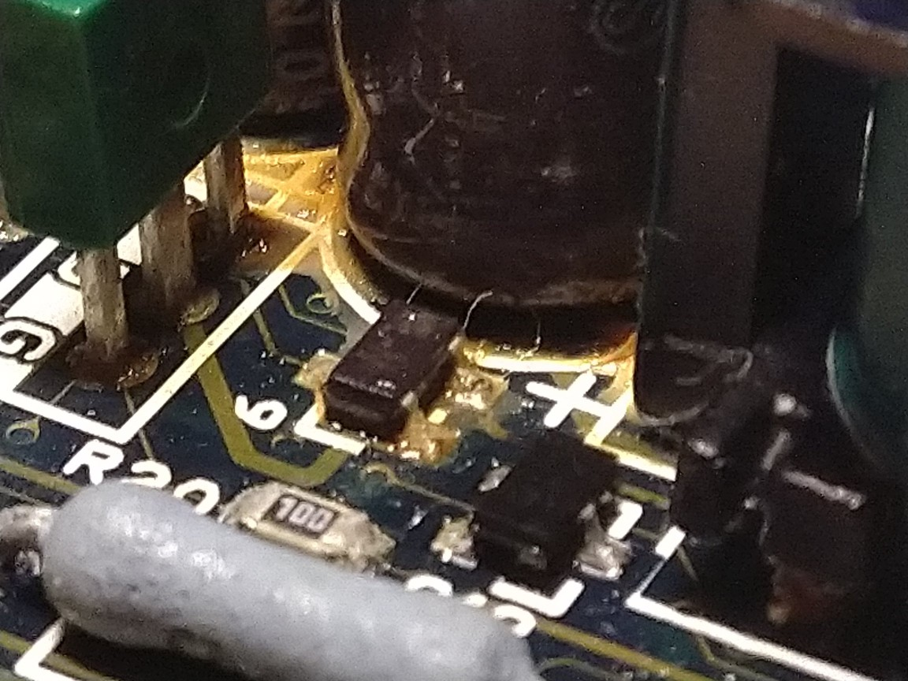
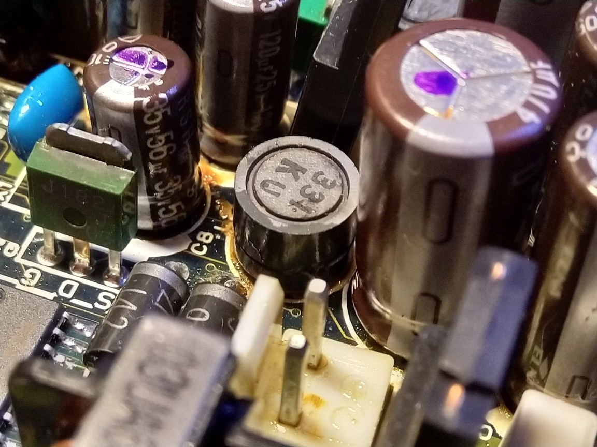

Toshiba T1200XE laptop
Specifications
- Processor: 286 @ 12MHz
- RAM: 1MB (on-board), expandable up to 5MB
- Disk drive: 1 3.5" (1.44MB) floppy drive
- HDD: Either 20MB or 40MB
- Display: 640x400, capable of CGA or a special hi-res graphics mode
About this computer
I bought it at a flea market, without knowing if it worked or not, though it seemed to be in good physical condition and the LCD on it wasn't cracked, so I decided to buy it anyways. It came with the original carrying bag, some floppies for the OS and the setup menu and some unrelated accessories.
After getting it home I plugged it into a DC power adaptor and tried to power it on, but unfortunately nothing happened. However, while it was plugged in I noticed a weird smell coming out of the laptop. Long story short, after opening it up I was greeted by this:
 {kind=link}
{kind=link}
All the capacitors on the DC-DC power board were leaky, and needed replacing.
Unfortunately, even after removing the old capacitors, cleaning the board, buying new ones and installing them I still couldn't get the computer to start up. I'm not sure what the problem might be - it could be that the caps on the motherboard need to be replaced too, or maybe one of the traces on the PSU board has been damaged and needs repair - I don't know. For now I have abandoned this project, but I might come back to it some other day.